1
Fill in the blank. A(n)
________________ is a semicircular
niche in the wall of a mosque that
indicates the direction that
Muslims should face when praying.
Choose one answer.
| A. Mihrab | ||
| B. Minaret | ||
| C. Iwan | ||
| D. Muqarna | ||
| E. Madrasa |
Question 2
Elements from which of the
following artistic traditions were
adopted in early Islamic art and
architecture?
Choose one answer.
| A. Byzantine | ||
| B. Sassanian | ||
| C. Greco-Roman | ||
| D. All of the above | ||
| E. None of the above |
Question 3
Who built the Alhambra?
Choose one answer.
| A. The Nasirids | ||
| B. The Abbasids | ||
| C. The Seljuks | ||
| D. The Fatimids | ||
| E. The Umayyads |
Question 4
Fill in the blank. The gardens of
wealthy Islamic patrons were often
designed based on descriptions of
________________.
Choose one answer.
| A. Islamic paradise | ||
| B. Mecca | ||
| C. Medina | ||
| D. All of the above | ||
| E. None of the above |
Question 5
Fill in the blank. The
_________________ are famous for
building palaces that are often
referred to as "desert castles."
Choose one answer.
| A. Umayyads | ||
| B. Ottomans | ||
| C. Abbasids | ||
| D. Ayyubids | ||
| E. Fatimids |
Question 6
Which of the following is best
described as a cube-like brick
structure covered in a black cloth
embroidered with verses from the
Koran that is the focus of Islamic
pilgrimage?
Choose one answer.
| A. Ka'ba | ||
| B. Dome of the Rock | ||
| C. Kiswa | ||
| D. Madrasa | ||
| E. None of the above |
Question 7
Which of the following is the
oldest extant example of Islamic
architecture and was constructed by
the Umayyad Caliphate?
Choose one answer.
| A. Dome of the Rock | ||
| B. Ka'ba | ||
| C. Great Mosque of Damascus | ||
| D. Great Mosque of Cordoba | ||
| E. Sulaybiya Mausoleum |
Question 8
This image depicts the Courtyard of
Lions, part of what large palace
complex?
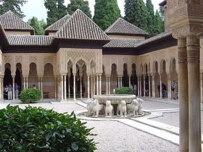
Choose one answer.
| A. The Alhambra | ||
| B. The Red Fort | ||
| C. The Topkapi Palace | ||
| D. Qusayr 'Amra | ||
| E. Guri Amir |
Question 9
Fill in the blank. This image
depicts the prayer hall of
_______________. Its arches are
made of alternating red and white
wedge-shaped blocks that are
associated with Umayyad monuments,
such as the Umayyad Mosque and the
Dome of the Rock.
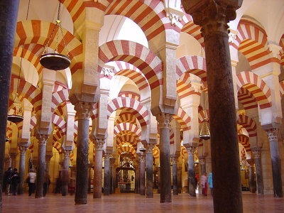
Choose one answer.
| A. The Sultan Hasan Mosque | ||
| B. The Great Mosque of Cordoba | ||
| C. The Al-Aqsa Mosque | ||
| D. The Suleymaniye Mosque | ||
| E. Qusayr 'Amra |
Question 10
Fill in the blank. This image
depicts _____________, the first
monumental building project in
Islamic history.
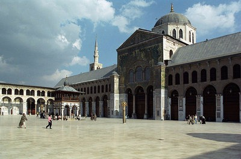
Choose one answer.
| A. The Dome of the Rock | ||
| B. The Umayyad Mosque | ||
| C. The Al-Aqsa Mosque | ||
| D. Great Mosque of Cordoba | ||
| E. Qusayr 'Amra |
Question 11
This image shows the courtyard of
which structure? The floor of the
courtyard is made of marble and its
arcades are decorated with gold
mosaics.

Choose one answer.
| A. The Umayyad Mosque | ||
| B. The Sultan Hasan Mosque | ||
| C. The Taj Mahal | ||
| D. The Suleymaniye Mosque | ||
| E. Maidan-I Shah |
Question 12
This image shows the honeycomb-like
vaulted ceiling of the Hall of the
Abencerrajes in which of the
following buildings?
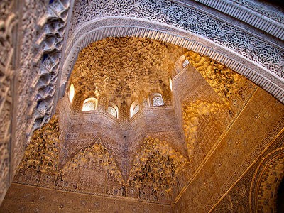
Choose one answer.
| A. The Great Mosque of Cordoba | ||
| B. The Alhambra | ||
| C. The Great Mosque of Damascus | ||
| D. The Suleymaniye Mosque | ||
| E. The Sultan Hasan Mosque |
Question 13
This picture shows what important
Islamic shrine that covers the site
where Muhammad was said to have
ascended into the sky with the
Angel Gabriel?

Choose one answer.
| A. The Dome of the Rock | ||
| B. The Qibla | ||
| C. The Ka'ba | ||
| D. The Great Mosque of Damascus | ||
| E. The Sultan Hasan Mosque |
Question 14
When praying, Muslims face in the
direction of which of the
following?
Choose one answer.
| A. The Ka'ba in Mecca | ||
| B. The Dome of the Rock in Jerusalem | ||
| C. The House of the Prophet in Medina | ||
| D. All of the above | ||
| E. None of the above |
Question 15
Which of the following is part of
the Five Pillars of Islam?
Choose one answer.
| A. Profession of Faith | ||
| B. Fasting | ||
| C. Alms | ||
| D. Prayer | ||
| E. All of the above |
Question 16
Which of the following is the
earliest style of Arabic
calligraphy?
Choose one answer.
| A. Kufic | ||
| B. Naskhi | ||
| C. Thuluth | ||
| D. Nastaʿlīq | ||
| E. Ruq'ah |
Question 17
Which of the following statements
about the Hajj is false?
Choose one answer.
| A. It is an optional part of the Muslim faith. | ||
| B. All Muslims, if financially and physically able, must perform it once in their lifetime. | ||
| C. It is performed during the twelfth month of the Islamic calendar. | ||
| D. Pilgrims wear simple clothes made of two pieces of unstitched white cloth. | ||
| E. Its focus is on the Ka'ba in Mecca. |
Question 18
Which of the following statements
about mosques are true?
Choose one answer.
| A. A large architectural space for prayer is central to a mosque's design. | ||
| B. Historically, in addition to being places for prayer, mosques were community meeting places. | ||
| C. The very first mosque was believed to be in the courtyard of Muhammad's home. | ||
| D. All of the above | ||
| E. None of the above |
Question 19
Which of the following structures
are located in Haram Al-Sharif?
Choose one answer.
| A. The Ka'ba | ||
| B. The Al-Aqsa Mosque | ||
| C. The Great Mosque of Damascus | ||
| D. The Sultan Hasan Mosque | ||
| E. Qusayr 'Amra |
Question 20
Which of the following would you
NOT find decorating a mosque?
Choose one answer.
| A. Vegetal scrolls | ||
| B. Calligraphy | ||
| C. Figural decoration | ||
| D. Floral motifs | ||
| E. Geometric patterns |
Question 21
Which of the following is a style
of Spanish art and architecture
produced in the 12th to 16th
centuries that combines Islamic and
Romanesque, Gothic, or Renaissance
architectural elements and
decorative motifs?
Choose one answer.
| A. Mudėjar | ||
| B. Kufic | ||
| C. Mashriq | ||
| D. Maghreb | ||
| E. Nasrid |
Question 22
Which of the following can best be
described as tall towers from which
the call to prayer is often made?
Choose one answer.
| A. Minarets | ||
| B. Madrasas | ||
| C. Iwans | ||
| D. Mihrabs | ||
| E. Maqsurahs |
Question 23
Which of the following refers to
Islamic religious laws and customs
that govern every aspect of a
Muslim’s life?
Choose one answer.
| A. Sha'ria | ||
| B. Hadith | ||
| C. Qibla | ||
| D. Umma | ||
| E. Ramadan |
Question 24
What was the capital of the Umayyad
dynasty?
Choose one answer.
| A. Damascus | ||
| B. Jerusalem | ||
| C. Cairo | ||
| D. Istanbul | ||
| E. Ishafan |
Question 25
Art produced during which of the
following periods combines elements
of Islamic, Persian, and Central
Asian-Turkic artistic traditions?
Choose one answer.
| A. The Umayyad period | ||
| B. The Abbasid period | ||
| C. The Seljuk period | ||
| D. The Mamluk period | ||
| E. The Fatimid period |
Question 26
Inlaid bronze and brass objects
decorated with Arabic script in
which letters were transformed into
human and animal figures are
associated with which time period?
Choose one answer.
| A. The Umayyad period | ||
| B. The Abbasid period | ||
| C. The Seljuk period | ||
| D. The Ilkhanid period | ||
| E. The Fatimid period |
Question 27
The introduction of luster painting
over a white glaze is associated
with which time period?
Choose one answer.
| A. The Umayyad period | ||
| B. The Abbasid period | ||
| C. The Seljuk period | ||
| D. The Fatimid period | ||
| E. The Ottoman period |
Question 28
The mud-brick mausoleum of Sultan
Sanjar occupies the center of the
ruined city wall of Merv, the
capital of which dynasty?
Choose one answer.
| A. Umayyad | ||
| B. Abbasid | ||
| C. Seljuk | ||
| D. Fatimid | ||
| E. Timurid |
Question 29
The tomb tower and the square domed
mausoleum are the two types of
funerary architecture most
associated with what dynasty?
Choose one answer.
| A. Umayyad | ||
| B. Abbasid | ||
| C. Seljuk | ||
| D. Ottoman | ||
| E. Mughal |
Question 30
The tradition of building royal
mausoleums was introduced to the
Islamic world during which time
period?
Choose one answer.
| A. The Umayyad period | ||
| B. The Abbasid period | ||
| C. The Fatimid period | ||
| D. The Ilkhanid period | ||
| E. The Ottoman period |
Question 31
This image depicts the minaret of
which mosque built by one of the
rulers of the Abbasid
caliphate?

Choose one answer.
| A. The Great Mosque of Cordoba | ||
| B. The Sultan Hasan Mosque | ||
| C. The Great Mosque of Al-Mutawakkil | ||
| D. The Suleymaniye Mosque | ||
| E. The Ka'ba |
Question 32
What city briefly served as the
capital of the Abbasid caliphate
from 833-883 and is an important
source of information about Abbasid
art and architecture?
Choose one answer.
| A. Samarra | ||
| B. Damascus | ||
| C. Baghdad | ||
| D. Istanbul | ||
| E. Cairo |
Question 33
Fill in the blank. When compared to
earlier Islamic art and
architecture, which was based on
Hellenistic/Late Roman forms,
_______________ architecture shows
a new monumental style that
included elements of earlier
Sassanian architecture and massive
brick piers and arches.
Choose one answer.
| A. Umayyad | ||
| B. Abbasid | ||
| C. Mamluk | ||
| D. Ottoman | ||
| E. Mughal |
Question 34
Which of the following is the
Iranian term for a portal that
projects over the facade of a
building?
Choose one answer.
| A. Pishtaq | ||
| B. Iwan | ||
| C. Muqarna | ||
| D. Masjid | ||
| E. Mihrab |
Question 35
Which of the following mosques,
located in Fez, Morocco, is the
largest mosque in Africa as well as
one of the world's oldest
universities?
Choose one answer.
| A. The Qarawiyyin Mosque | ||
| B. The Sultan Hasan Mosque | ||
| C. The Al-Aqsa Mosque | ||
| D. The Alhambra | ||
| E. The Umayyad Mosque |
Question 36
Which of the following were built
along important trade routes by
Islamic rulers and wealthy patrons
to provide protection and lodgings
to travelers?
Choose one answer.
| A. Caravanserais | ||
| B. Muqarnas | ||
| C. Iwans | ||
| D. Pishtaqs | ||
| E. Madrasas |
Question 37
Fill in the blank. The circular
City of Peace, _______________, was
the capital of the Abbasid
caliphate.
Choose one answer.
| A. Baghdad | ||
| B. Jerusalem | ||
| C. Medina | ||
| D. Cairo | ||
| E. Istanbul |
Question 38
Fill in the blank. Vaulted halls
that are walled on three sides,
known as ________________, became
one of the basic units of the
Islamic architecture during the
Seljuk period.
Choose one answer.
| A. Caravanserais | ||
| B. Iwan | ||
| C. Muqarna | ||
| D. Mihrab | ||
| E. Madrasa |
Question 39
Architecture built under which of
the following dynasties was made
primarily of stone but included
doors, panels, mihrabs, and
lattice-work screens that were made
of wood?
Choose one answer.
| A. The Umayyad dynasty | ||
| B. The Ayyubid dynasty | ||
| C. The Mamluk dynasty | ||
| D. The Ilkhanid dynasty | ||
| E. The Timurid dynasty |
Question 40
City planning under which of the
following rulers centered on the
palace of the ruler rather than a
central mosque?
Choose one answer.
| A. The Umayyads | ||
| B. The Abbasids | ||
| C. The Seljuks | ||
| D. The Fatimids | ||
| E. The Ottomans |
Question 41
Enameled glass lamps, such as the
piece you see here, are associated
with which of the following
dynasties?

Choose one answer.
| A. The Ilkhanid dynasty | ||
| B. The Ottoman dynasty | ||
| C. The Seljuk dynasty | ||
| D. The Mamluk dynasty | ||
| E. The Mughal dynasty |
Question 42
Mosques built by which of the
following rulers are distinctive
because of their absence of
minarets?
Choose one answer.
| A. The Umayyads | ||
| B. The Abbasids | ||
| C. The Fatimids | ||
| D. The Seljuks | ||
| E. The Ottomans |
Question 43
This image depicts which mosque
built by the Mamluks that is part
of a complex that includes the
mosque, a madrasa, and a
mausoleum?
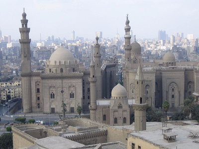
Choose one answer.
| A. The Great Mosque of Cordoba | ||
| B. The Sultan Hasan Mosque | ||
| C. The Al-Aqsa Mosque | ||
| D. The Suleymaniye Mosque | ||
| E. The Al-Hakim Mosque |
Question 44
This image depicts which of the
following mosques that was first
built by the Fatimids and later
became the largest Sunni university
in the world?
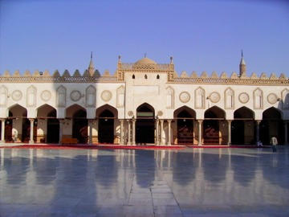
Choose one answer.
| A. The Al-Azhar Mosque | ||
| B. The Umayyad Mosque | ||
| C. The Al-Aqsa Mosque | ||
| D. The Suleymaniye Mosque | ||
| E. The Sultan Hasan Mosque |
Question 45
This image depicts which of the
following structures built by the
Ayyubid ruler Saladin?
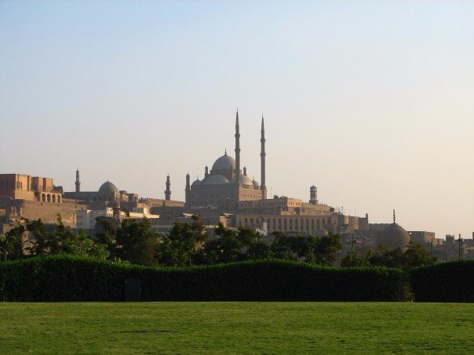
Choose one answer.
| A. The Citadel of Cairo | ||
| B. The Sultan Hasan Mosque | ||
| C. The Firdawsi Mosque and Madrasa | ||
| D. The Suleymaniye Mosque | ||
| E. The Imam al-Shafi'i Mausoleum |
Question 46
Tiraz textiles are associated with
which of the following dynasties?
Choose one answer.
| A. The Umayyads | ||
| B. The Mamluks | ||
| C. The Fatimids | ||
| D. The Mughals | ||
| E. The Safavids |
Question 47
Which of the following is
characteristic of Mamluk
architecture?
Choose one answer.
| A. The four iwan plan | ||
| B. Three-tiered minarets | ||
| C. Domes with cylindrical drums and pointed profiles | ||
| D. Stone muqarnas | ||
| E. All of the above |
Question 48
Which dynasty focused most of its
patronage on constructing madrasas,
some of which housed several Sunni
schools that were organized around
a central courtyard?
Choose one answer.
| A. The Umayyad dynasty | ||
| B. The Abbasid dynasty | ||
| C. The Ayyubid dynasty | ||
| D. The Fatimid dynasty | ||
| E. The Mughal dynasty |
Question 49
Art and architecture of which
period was a fusion of Persian,
Islamic, and East Asian traditions?
Choose one answer.
| A. The Ilkhanid period | ||
| B. The Abbasid period | ||
| C. The Seljuk period | ||
| D. The Mamluk period | ||
| E. The Umayyad period |
Question 50
The apogee of Ilkhanid illustrated
manuscripts is said to be which of
the following?
Choose one answer.
| A. The Great Mongol Shahnama | ||
| B. The Book of Omens | ||
| C. The Free Men's Companion to the Subtleties of Poetry | ||
| D. The Compendium of Chronicles | ||
| E. History of the World Conqueror |
Question 51
The interior and the exterior of
which of the following Ilkhanid
buildings was originally covered
with brilliantly colored ceramic
tiles?
Choose one answer.
| A. The Great Mosque of Cordoba | ||
| B. The Sultan Hasan Mosque | ||
| C. The Takht-i Sulayman Summer Palace | ||
| D. The Suleymaniye Mosque | ||
| E. The Imam al-Shafi'i Mausoleum |
Question 52
The Oljeitu Tomb is all that
remains of which of the following
cities that was the capital of the
Ilkhanids?
Choose one answer.
| A. Sultaniya | ||
| B. Fez | ||
| C. Merv | ||
| D. Samarra | ||
| E. Fatehpur Sikri |
Question 53
This image depicts the dome of
which mosque that was built by
Timur in Samarkand after his
conquest of Hindustan?

Choose one answer.
| A. The Bibi Khanum Mosque | ||
| B. The Sultan Hasan Mosque | ||
| C. The Al-Aqsa Mosque | ||
| D. The Suleymaniye Mosque | ||
| E. The Moti Mosque |
Question 54
Timur and his sons are buried at
what site in Samarkand?
Choose one answer.
| A. Guri Amir | ||
| B. The Amir Burunduq Mausoleum | ||
| C. Aq Saray Mausoleum | ||
| D. The Bibi Khanum Mosque | ||
| E. The Ishrat Khana Tomb |
Question 55
Which of the following statements
about the text and illustrations of
the Shahnama
or Persian Book
of Kings is false?
Choose one answer.
| A. Elaborate illustrations of the Shahnama were commissioned to legitimize rulers. | ||
| B. The Shahnama tells the history of Persia up until the conquest of Alexander the Great. | ||
| C. The two most famous copies are the Great Mongol Shahnama and the Shah Tahmasp Shahnama. | ||
| D. Illustrations usually depicted past real and mythical rulers dressed in contemporary costume. | ||
| E. Copies of the Shahnama were compilations of the artwork of painters, calligraphers, and other craftsmen. |
Question 56
Which of the following statements
about Timurid architecture is
false?
Choose one answer.
| A. It combines Persian and Central Asian elements. | ||
| B. It can be divided into four time periods based on the reigns of different rulers. | ||
| C. Its technique of squinch-net vaulting was developed in Herat. | ||
| D. Few Timurid architectural features were incorporated into later Safavid, Ottoman, or Mughal architecture. | ||
| E. Timurid rulers built madrasa-khanaqh complexes. |
Question 57
Which of the following was the
major design innovation of the Bibi
Khanum Mosque?
Choose one answer.
| A. It had dome chambers beyond its lateral iwans. | ||
| B. It followed a four iwan plan. | ||
| C. It was the first square dome mosque. | ||
| D. It used cantilinear vaults. | ||
| E. All of the above |
Question 58
Which of the following was an
artistic and cultural center of the
Timurid Empire?
Choose one answer.
| A. Herat | ||
| B. Samarkand | ||
| C. Bukhara | ||
| D. Shahr-i Sabz | ||
| E. All of the above |
Question 59
Pictorial space as well as motifs,
such as the peony, cloud bands,
dragons, and phoenixes, from which
culture were incorporated into
Ilkhanid period art?
Choose one answer.
| A. Chinese | ||
| B. Egyptian | ||
| C. Russian | ||
| D. All of the above | ||
| E. None of the above |
Question 60
Ceramics produced in which of the
following modern countries were
highly valued and inspired artistic
developments in the Safavid,
Ottoman, and Mughal empires?
Choose one answer.
| A. China | ||
| B. Italy | ||
| C. Russia | ||
| D. England | ||
| E. Korea |
Question 61
Developments in Safavid
architecture and city planning are
best known by Shah Abbas I's
building projects in what city?
Choose one answer.
| A. Damascus | ||
| B. Ishafan | ||
| C. Samarkand | ||
| D. Baghdad | ||
| E. Samarra |
Question 62
Hindu architectural forms were used
in the building of which early
Indian mosque, part of which is
depicted in this picture?
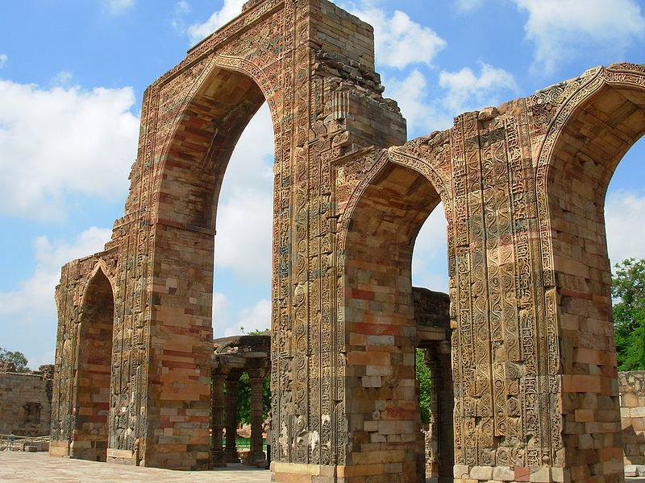
Choose one answer.
| A. The Quwwat al-Islam Mosque | ||
| B. The Moti Masjid | ||
| C. The Jama Masjid of Dehli | ||
| D. The Mecca Masjid | ||
| E. The Atala Masjid |
Question 63
Ishafan was the capital of which
two Islamic dynasties?
Choose one answer.
| A. Seljuk and Safavid | ||
| B. Seljuk and Timurid | ||
| C. Fatimid and Mamluk | ||
| D. Ummayad and Abbasid | ||
| E. Abbasid and Seljuk |
Question 64
Riza 'Abbasi is credited with
bringing a new set of subject
matter to Persian painting that
included which of the following?
Choose one answer.
| A. Semi-nude figures | ||
| B. Languid youths | ||
| C. Young lovers | ||
| D. All of the above | ||
| E. None of the above |
Question 65
The buildings of Fatehpur Sikri are
made from what kind of stone?
Choose one answer.
| A. Limestone | ||
| B. Red sandstone | ||
| C. White marble | ||
| D. All of the above | ||
| E. None of the above |
Question 66
The city of Fatehpur Sikri was
founded by which Mughal emperor?
Choose one answer.
| A. Humayun | ||
| B. Shah Jahan | ||
| C. Akbar | ||
| D. Salim Christi | ||
| E. Jahangir |
Question 67
The Ottoman ruler Mehmed II, "The
Conqueror," drew on elements of
which of the following traditions
in his rebuilding programs at
Istanbul?
Choose one answer.
| A. Byzantine | ||
| B. Turkic | ||
| C. Perseo-Islamic | ||
| D. European | ||
| E. All of the above |
Question 68
Fill in the blank. The Ottoman
Sultan Ahmed III's reign is also
known as the _____________ period,
due to the popularity of this
flower in floral decorations that
replaced the saz style of
ornamentation.
Choose one answer.
| A. Tulip | ||
| B. Rose | ||
| C. Peony | ||
| D. Gardenia | ||
| E. Iris |
Question 69
The reign of which of the following
Ottoman rulers is usually
considered to be the "Golden Age"
of the Ottoman Empire?
Choose one answer.
| A. Mahmud II | ||
| B. Osman I | ||
| C. Mehmed II | ||
| D. Suleiman the Magnificent | ||
| E. Selim I |
Question 70
The Safavid rulers are famous for
their patronage of which of the
following arts?
Choose one answer.
| A. Illustrated manuscripts | ||
| B. Inlaid metalwork | ||
| C. Enameled glass | ||
| D. Blown glass | ||
| E. Luster painted ceramics |
Question 71
The Taj Mahal is made from what
type of stone?
Choose one answer.
| A. Limestone | ||
| B. Red sandstone | ||
| C. White marble | ||
| D. All of the above | ||
| E. None of the above |
Question 72
The trade and economic boom in the
seventeenth century Safavid Empire
had which of the following effects
upon the arts?
Choose one answer.
| A. Urban elite and other members of Safavid society were able to commission artworks. | ||
| B. Artworks began to be decorated with untraditional figures, such as mythical beasts. | ||
| C. Safavid artists remained committed to their own artistic traditions and did not incorporate foriegn elements in their artwork. | ||
| D. All of the above | ||
| E. None of the above |
Question 73
This image depicts the interior of
what Mughal building?
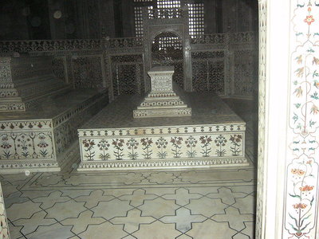
Choose one answer.
| A. The Taj Mahal | ||
| B. Humayun's Tomb | ||
| C. The Jama Masjd of Dehli | ||
| D. The Tomb of Salim Chisti | ||
| E. The Moti Mosque |
Question 74
Fill in the blank. This image
depicts the _____________ of
Suleiman the Magnificent.

Choose one answer.
| A. Tughra | ||
| B. Nasta'liq | ||
| C. Muraqqa | ||
| D. Diwani | ||
| E. Thuluth |
Question 75
This image depicts which early
Mughal structure that was designed
by a Persian architect yet includes
Hindu domed pavilions surrounding
the central dome?
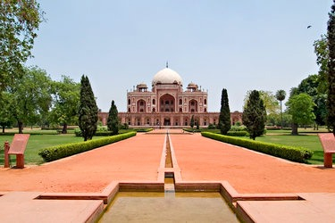
Choose one answer.
| A. The Taj Mahal | ||
| B. Humayun's Tomb | ||
| C. The Jama Masjd of Dehli | ||
| D. Lahore Fort | ||
| E. The Babri Mosque |
Question 76
This image depicts which massive
mosque that was commissioned by
Shah Jahan?
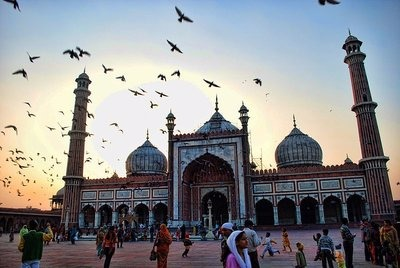
Choose one answer.
| A. The Jama Masjid of Dehli | ||
| B. The Mina Mosque | ||
| C. The Moti Mosque | ||
| D. The Babri Mosque | ||
| E. The Gyanvapi Mosque |
Question 77
This image depicts which Ottoman
mosque that incorporates elements
of French empire style
architecture?
Choose one answer.
| A. The Great Mosque of Cordoba | ||
| B. The Nusretiye Mosque | ||
| C. The Selimiye Mosque | ||
| D. The Suleymaniye Mosque | ||
| E. The Sultan Hasan Mosque |
Question 78
This image depicts which Ottoman
palace? Its construction began
directly after the Ottoman conquest
of Constantinople.

Choose one answer.
| A. The Topkapi Palace | ||
| B. Takht-i Sulayman | ||
| C. Dolmabahçe Palace | ||
| D. Yildiz Palace | ||
| E. Hasht Behesht |
Question 79
This image depicts which Ottoman
palace that is an example of
neo-Baroque architecture?

Choose one answer.
| A. The Dolmabahçe Palace | ||
| B. The Topkapi Palace | ||
| C. Aynalıkavak Palace | ||
| D. The Suleymaniye Palace | ||
| E. The Yildiz Palace |
Question 80
This image depicts which structure
that is part of Fatehpur Sikri?
Originally made of red sandstone,
its exterior was covered by white
marble by Emperor Jahangir.

Choose one answer.
| A. The Tomb of Salim Chisti | ||
| B. The Jama Masjid of Dehli | ||
| C. The Lahore Fort | ||
| D. Humayun's Tomb | ||
| E. The Moti Mosque |
Question 81
This image shows which mosque in
Constantinople that was designed by
the Ottoman architect Sinan?
Choose one answer.
| A. The Great Mosque of Cordoba | ||
| B. The Sultan Hasan Mosque | ||
| C. The Selimiye Mosque | ||
| D. The Suleymaniye Mosque | ||
| E. The Bibi Khanum Mosque |
Question 82
Turkish building projects in
Constantinople focused upon what?
Choose one answer.
| A. The development of complexes focused on a mosque that combined religious, funerary, educational, and financial institutions. | ||
| B. The construction of a new city center that focused on the Ottoman Palace. | ||
| C. The construction of a new city center that focused on the Hagia Sophia, which had been converted into a mosque. | ||
| D. The construction of a city center focused on a large open courtyard surrounded by markets, mosques, and palaces. | ||
| E. None of the above |
Question 83
Which nineteenth century Ottoman
sultan's reforms brought about an
increased fusion of Ottoman and
European elements in Ottoman art
and architecture?
Choose one answer.
| A. Sultan Mahmud II | ||
| B. Mustafa IV | ||
| C. Suleiman the Magnificent | ||
| D. Ahmed II | ||
| E. Osman I |
Question 84
Which of the following characterize
illuminated manuscripts made in the
atelier of Jahangir?
Choose one answer.
| A. Most were part of lavishly finished albums. | ||
| B. They were usually created by a single painter. | ||
| C. Many were plant and animal studies. | ||
| D. Many contained realistic portraiture and Europeanized subjects. | ||
| E. All of the above |
Question 85
Which of the following statements
about the Taj Mahal is false?
Choose one answer.
| A. It represents the Islamic garden of paradise. | ||
| B. It is decorated with murals that depict Shah Jahan. | ||
| C. It is decorated throughout with verses from the Koran. | ||
| D. It contains the cenotaph of Mumtaz Muhal and Shah Jahan. | ||
| E. All of the above |
Question 86
Which of the following statements
about Ottoman mosques is false?
Choose one answer.
| A. They are based on Seljuk and Byzantine architecture. | ||
| B. They are distinguised by their dark interiors. | ||
| C. They are based on a square dome plan. | ||
| D. The mosque constructed by Sinan drew inspiration from the Hagia Sophia. | ||
| E. They have slender corner minarets. |
Question 87
Which of the following statements
about carpets in the Islamic world,
c. 1600-1800, is false?
Choose one answer.
| A. Carpet weaving was an important statewide industry in the Safavid, Ottoman, and Mughal empires. | ||
| B. They were produced in large private factories. | ||
| C. Carpets were traded with merchants from East Asia and Europe. | ||
| D. Carpets were central to Shah 'Abbas I plan to attract foreign merchants. | ||
| E. Few carpets were produced in India before the reign of Akbar. |
Question 88
Which of the following statements
about Mughal architecture is false?
Choose one answer.
| A. It combine local Hindu and Islamic building traditions with the architectural traditions of Iran and Central Asia. | ||
| B. Early Mughal buildings were constructed from white marble. | ||
| C. Mughal rulers commissioned many different types of buildings including palaces, mosques, gardens, and mausoleums. | ||
| D. Mughal mosques have massive enclosed courtyards. | ||
| E. Mughal mosques have domed shallow prayer halls. |
Question 89
Which of the following statements
about Safavid architecture is
false?
Choose one answer.
| A. It continues Timurid and Persian architectural traditions. | ||
| B. It does not use the four iwan plan. | ||
| C. It includes elements such as pishtaqs. | ||
| D. It uses brick and decorated tiles. | ||
| E. It included massive city planning projects, such as those of Shah 'Abbas I. |
Question 90
Which of the following statements
about the Shahnama
of Shah Tahmasp is false?
Choose one answer.
| A. It is written in nasta'liq script. | ||
| B. Its fine paper is enriched with flecks of gold. | ||
| C. It was created at the royal atelier at Tabriz. | ||
| D. It was given as a gift to an Ottoman sultan. | ||
| E. It was completed solely during the reign of Shah Tahmasp. |
Question 91
Which of the following statements
about the Topkapi Palace is false?
Choose one answer.
| A. It was built on the tip of the peninsula that overlooked the Golden Horn and the Bosphorous. | ||
| B. It was surrounded by a wall and behind the wall were buildings loosely laid out in a garden like setting. | ||
| C. The layout of the structure was not hierarchically ordered. | ||
| D. It included residential, religious, educational, administrative, and service buildings. | ||
| E. Its construction was ordered by Mehmed II, after he conquered Constantinople. |
Question 92
Which of the following statements
is true of illuminated manuscripts
in the Islamic world?
Choose one answer.
| A. Many were created in non-royal commercial workshops. | ||
| B. Illustrated books were financial investments, status symbols, and objects of diplomacy. | ||
| C. Specific workshops produced copies of the Koran. | ||
| D. The paper used for the books was made of tree pulp. | ||
| E. Usually only one artist worked on each scene. |
Question 93
Which of the following statements
is true of Ottoman architecture?
Choose one answer.
| A. Early Ottoman architecture was based on Byzantine and Seljuk traditions. | ||
| B. Ottoman architecture remained fairly uniform throughout its extensive empire. | ||
| C. Imperial patronage focused on the construction of kulliye. | ||
| D. All of the above | ||
| E. None of the above |
Question 94
Which of the following statements
is true of Shah 'Abbas I's building
programs?
Choose one answer.
| A. They consisted of an axial arrangement of new royal markets that linked the old city to a new center of markets, mosques, and the royal palace. | ||
| B. Their new city center was comprised of a series of concentric circles. | ||
| C. They did not make use of large open spaces but were comprised of a series of closely connected structures. | ||
| D. They incorporated elements of the old city behind the gates of a massive citadel. | ||
| E. All of the above |
Question 95
Which of the following structures
was the royal palace built by Shah
Jahan?
Choose one answer.
| A. The Red Fort | ||
| B. The Lahore Fort | ||
| C. The Taj Mahal | ||
| D. Fatehpur Sikri | ||
| E. The Asfarwala Complex |
Question 96
Which of the following sultanates
and/or empires were regular trading
partners with the city of Venice?
Choose one answer.
| A. Mamluk | ||
| B. Safavid | ||
| C. Ottoman | ||
| D. All of the above | ||
| E. None of the above |
Question 97
Which of the following was Russia's
biggest import from the Ottoman and
Safavid Empires?
Choose one answer.
| A. Textiles | ||
| B. Porcelain | ||
| C. Enameled glass | ||
| D. Jades | ||
| E. Luster painted ceramics |
Question 98
Who commissioned the Taj Mahal?
Choose one answer.
| A. Akbar | ||
| B. Humayun | ||
| C. Jahangir | ||
| D. Shah Jahan | ||
| E. Babur |
Question 99
Who was the first Mughal emperor to
establish a royal atelier for the
creation of illustrated
manuscripts?
Choose one answer.
| A. Akbar | ||
| B. Humayun | ||
| C. Jahangir | ||
| D. Shah Jahan | ||
| E. Babur |
Question 100
Who is one of the most famous
Islamic architects that designed
buildings throughout the Ottoman
Empire, during the reign of
Suleiman the Magnificent and Selim
II?
Choose one answer.
| A. Sinan | ||
| B. Krikor Balyan | ||
| C. Garabed | ||
| D. Nikogos | ||
| E. A. Jachmund |